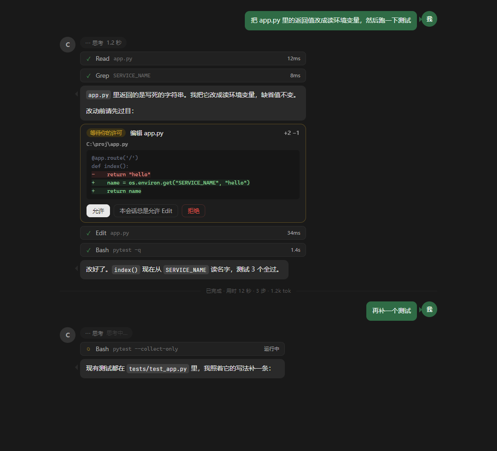
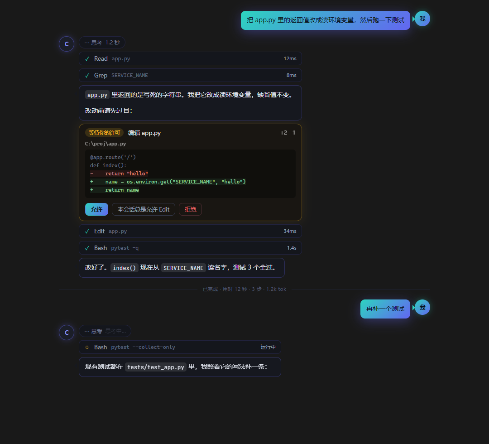
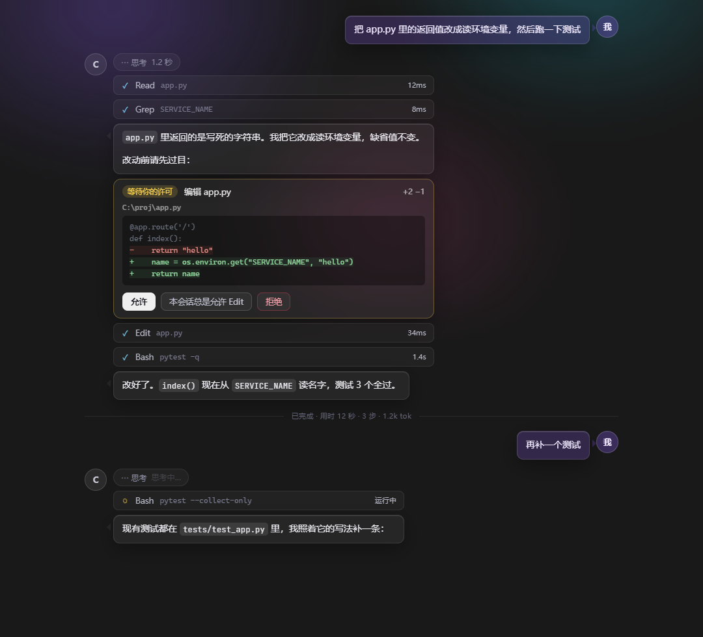
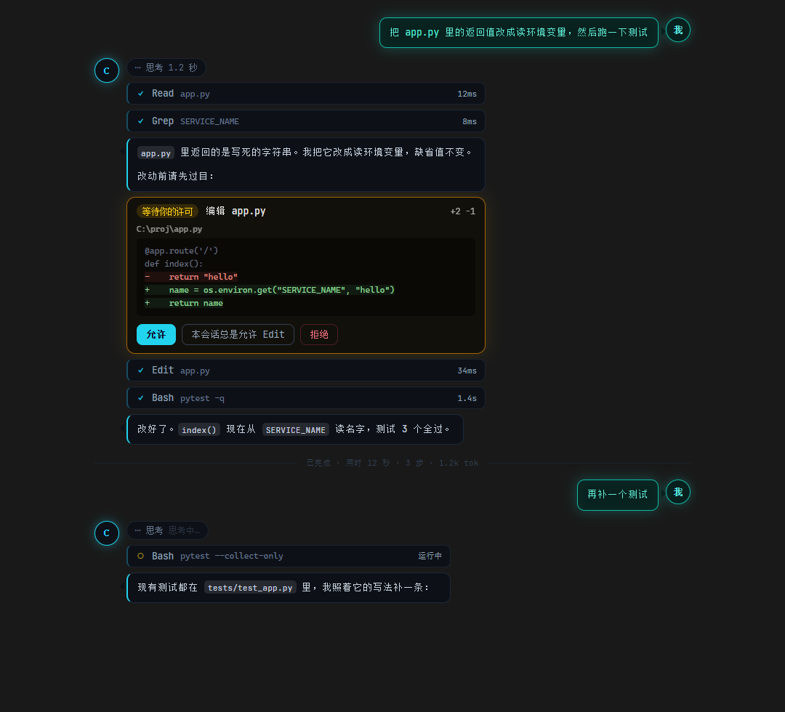

← 这是上一轮（微信式左右分栏）的稿子，已经被否掉了。
最新一版在 output-v2.html —— 五个结构方案，可切换对比。
四个方案结构完全一样：我的消息在右、助手在左，各带头像和气泡尾巴，工具调用在助手那一列往下流。
差别只在视觉语言 —— 配色、质感、发光。尺寸按真实主区渲染（1080px 宽）。
每张图下半段是正在跑的状态：思考中… / 工具运行中 / 正文带光标。也可以开 transcript.html?v=all 看实时版本。




取舍：A 最稳，谁都看得懂，但也最"平"；B 最抓眼，代价是彩色气泡看久了会累、和工具卡抢注意力；
C 质感最好，代价是半透明 + 背景光晕在长会话里容易糊成一片；D 最有性格，代价是中文在等宽字体下略丑、正文可读性降。
混搭也行 —— 比如「A 的结构 + B 的我的气泡」「C 的助手气泡 + D 的等宽工具行」。